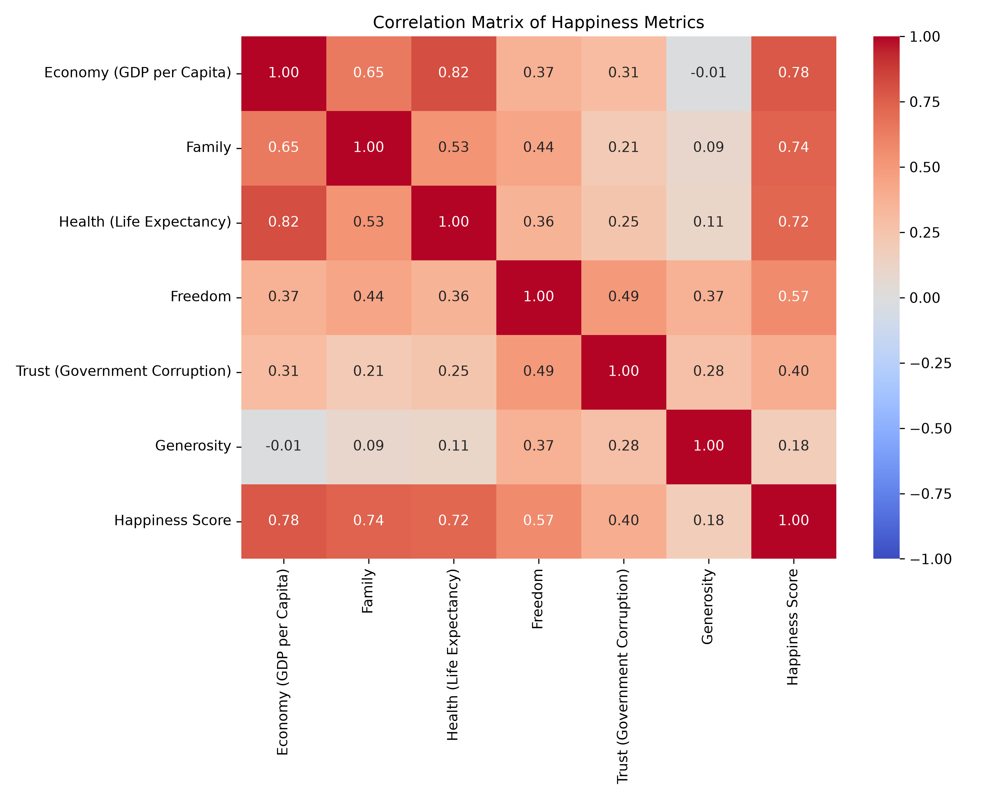
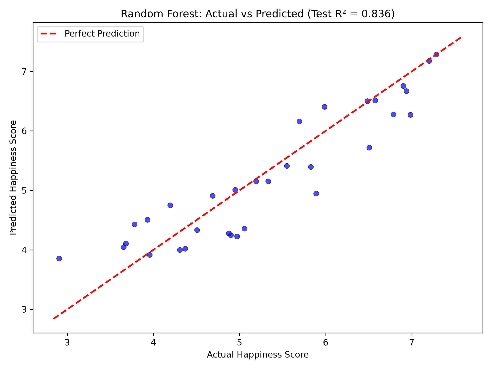
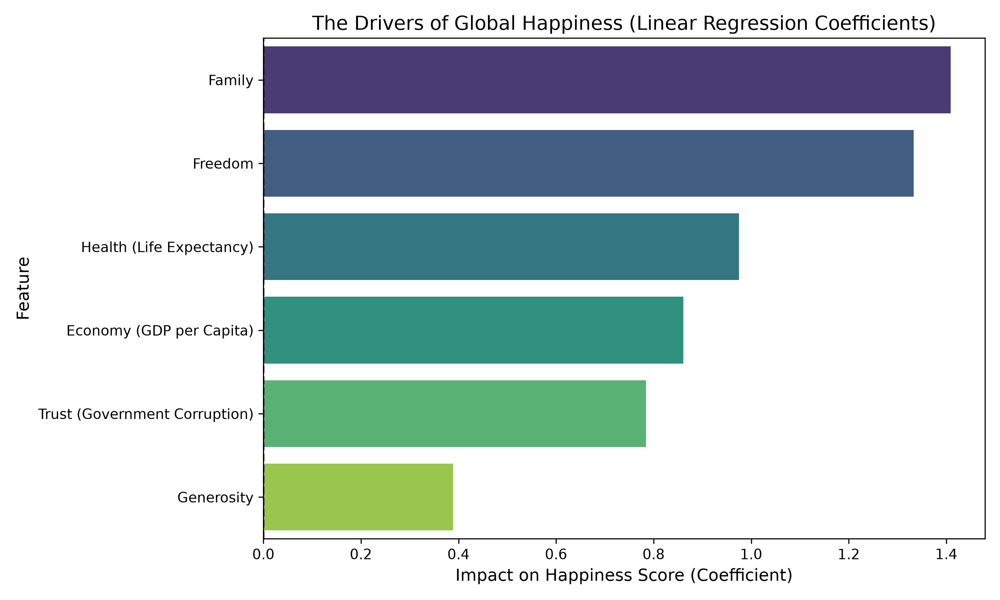
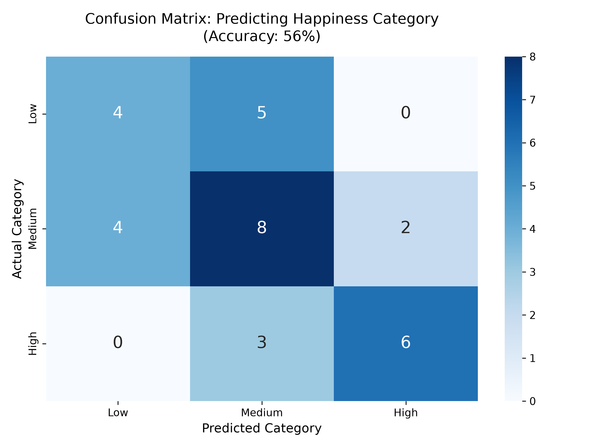

The pursuit of happiness is one of humanity's oldest philosophical questions. But in the era of big data, it has also become a statistical one. The 2015 World Happiness Report provided a fascinating snapshot of global well-being, ranking 158 countries based on complex survey data. But what truly drives these scores? Is it purely wealth, or do health, family, and freedom play a larger role?
To answer this, I utilized Python and machine learning to reverse-engineer the happiness score. By analyzing six key metrics—Economy (GDP per Capita), Family, Health (Life Expectancy), Freedom, Trust in Government, and Generosity—this project aims to find the mathematical equation for a happy nation.
The dataset spans the globe, from the pristine peaks of Switzerland (Rank 1, Score 7.587) to the challenging environments of Togo (Rank 158, Score 2.839). This variance provides a perfect playground for regression analysis. Before building any models, we mapped the correlation between the variables.

As seen in the heatmap above, the strongest positive correlations with the Happiness Score are **Economy (GDP)** and **Health**. Interestingly, **Generosity** shows a surprisingly weak correlation. This immediately tells us that while giving to charity feels good, a nation's average generosity doesn't dictate its overall happiness ranking as strongly as its wealth or life expectancy.
We trained four distinct machine learning models on 80% of the data and tested them on the remaining 20% of unseen countries. The metric used to judge them was the R-squared (R²) score. In simple terms, R² tells us the percentage of the variance in happiness that our model can explain. An R² of 1.0 is perfect; an R² of 0 means the model is just guessing the average.
| Model | Train R² | Test R² | Average Error (MAE) |
|---|---|---|---|
| Linear Regression | 0.803 | 0.864 | 0.348 |
| Random Forest | 0.966 | 0.836 | 0.392 |
| XGBoost | 1.000 | 0.796 | 0.432 |
| Decision Tree | 0.920 | 0.758 | 0.478 |

Because Linear Regression is a "white box" model, we can extract the exact mathematical coefficients it learned. These coefficients tell us exactly how much a 1-unit increase in a feature affects the Happiness Score, assuming everything else stays the same.

The Economic Weight: Economy (GDP per Capita) has the largest coefficient. In our model, a 1-point increase in the GDP metric translates to roughly a 1.2-point increase in the happiness score. Money, unequivocally, matters.
The Health Factor: Health (Life Expectancy) comes in second. A healthy population is a happy population.
The Generosity Paradox: Look at the Generosity bar. It is practically invisible. Mathematically, whether a country scores high or low on generosity barely shifts the needle on its overall happiness ranking, at least when compared to the heavyweights of GDP and Health.
Finally, we challenged the model to categorize countries into three distinct buckets: Low Happiness (score < 4.5), Medium (4.5 - 6.0), and High (> 6.0). We used a Random Forest Classifier for this task.

The model achieved a 56% accuracy. The confusion matrix reveals why: it is highly accurate at identifying "High" happiness countries, but struggles to distinguish between "Low" and "Medium". This is because the boundary between a score of 4.4 and 4.6 is artificial. A country is not fundamentally different just because it crossed an invisible threshold, which highlights the limitations of strict categorizations in social sciences.
Through this analysis, we proved that predicting the happiness of a nation is not random. The data shows a highly linear and predictable pattern. While complex AI models are tempting to use, the simplest model (Linear Regression) provided the most robust and interpretable results. Ultimately, the data suggests that the core pillars of a happy society remain fundamental: a strong economy, a healthy population, and strong familial bonds.
Built with Python, Scikit-Learn, Pandas, and Seaborn. Explore the source code in this repository.